📖 Manual Operativo y Técnico - ORION WMS
Sistema Integral de Gestión de Almacén, Recepción y Control Logístico Avanzado
🔒 Módulo 1: Acceso, Seguridad y Navegación Principal
1.1 Arquitectura de Autenticación y Control de Roles
-
Inicio de Sesión Seguro: El sistema restringe estrictamente el acceso operativo mediante credenciales encriptadas (correo corporativo y contraseña). Ningún usuario no autorizado puede ejecutar transacciones en piso.
🔍 Ver Guía y Detalles
Propósito: Evitar accesos indebidos y asegurar que cada auditoría o alistamiento quede firmado digitalmente por el responsable.Detalles y Guía Técnica: El módulo de autenticación valida credenciales contra la base de datos central con sesión segura y tokens para trazabilidad del operario.
 Imagen 1: Login
Imagen 1: Login -
Dinámica de Roles, Permisos y Control Multi-Almacén: Al autenticarse, Orion configura el menú principal habilitando o deshabilitando módulos según el rol. En la esquina superior derecha se selecciona el almacén activo (ej. CEDI, BOD, M145, M105, MASB, MCHIA, RUMBOS, SIBE, UBATE, BUCA, SOA, TUNJA, ZIPA).
🔍 Ver Guía y Detalles
Funcionalidad: Interfaz adaptativa que reduce errores ocultando funciones no autorizadas.Estructura de Módulos: Dashboard, Recepción, Gestión Almacén, Operaciones Stock y Mascotas. Selector desplegable para alternar centros de distribución.
 Imagen 2: Menú
Imagen 2: Menú Imagen 2B: Almacenes
Imagen 2B: Almacenes
1.2 Menú Lateral, Ajustes y Productividad
-
Menú Lateral de Gestión Operativa: Perfil de usuario, impresoras térmicas y configuración avanzada de periféricos (Tomar información de ficha técnica y Escáner externo).
🔍 Ver Guía y Detalles
Valor Técnico: Conexión directa con hardware periférico y ajustes personalizados.
 Imagen 3: PerfilImagen 3B: Periféricos
Imagen 3: PerfilImagen 3B: Periféricos -
Dashboard de Métricas de Rendimiento: Panel en tiempo real que consolida la productividad individual del operario.
🔍 Ver Guía y Detalles
KPIs: Permite que el usuario conozca su productividad acumulada.
 Imagen 4: Dashboard
Imagen 4: Dashboard
Pantalla de Login
Menú Principal y Almacenes
Menú Lateral y Periféricos
Dashboard de Métricas
📦 Módulo 2: Recepción de Mercancía y Auditorías Integradas
2.1 Flujo de Recepción (Arquitectura de 3 Pestañas)
-
Nueva Auditoría (Pestaña Central): Formulario para registrar datos de la entrega (NIT, Factura, ODC) y bultos.
🔍 Ver Guía y Detalles
Control Logístico: Clasifica la carga según requerimientos especiales de almacenamiento.
 Imagen 5: Recepción
Imagen 5: Recepción -
Auditorías Abiertas (Pestaña Izquierda): Recepciones pendientes conectadas con SAP. Al tocar un ítem abre el Formulario de Producto para capturar lotes, vencimientos y unidades.
🔍 Ver Guía y Detalles
Sincronización ERP: Captura detallada que evita diferencias con compras.
 Imagen 6: Abiertas
Imagen 6: Abiertas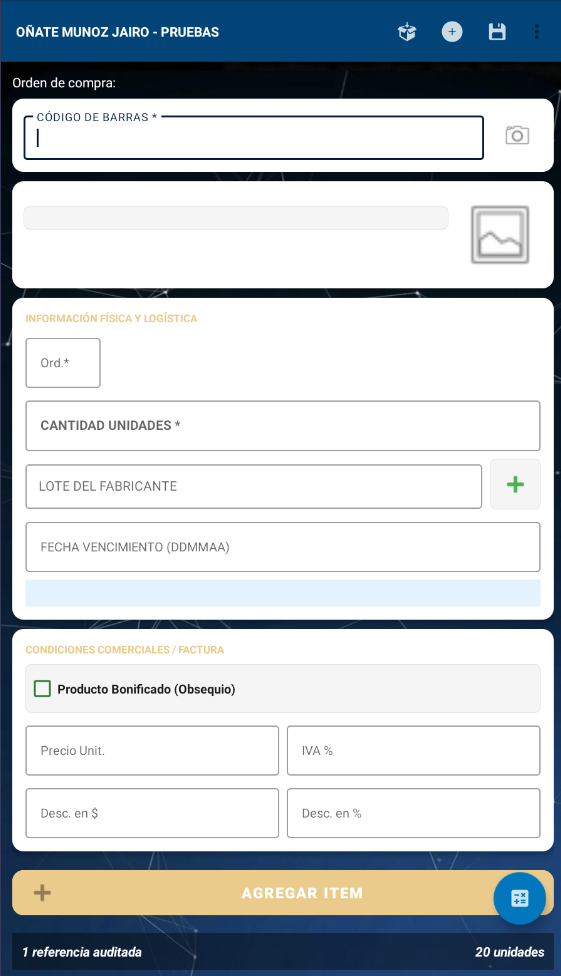
Imagen 6B: Producto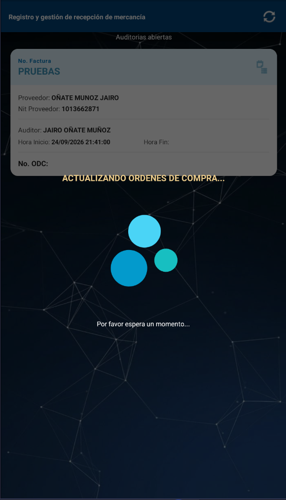
Imagen 7: Sync SAP -
Auditorías por Cargar a SAP (Pestaña Derecha): Registra preliminares por incidencias. Despliega el formulario Ingreso por preliminar para capturar la entrada SAP.
🔍 Ver Guía y Detalles
Trazabilidad y Cierre: Legalización de diferencias aprobadas por la administración.
 Imagen 8: Cargar a SAP
Imagen 8: Cargar a SAP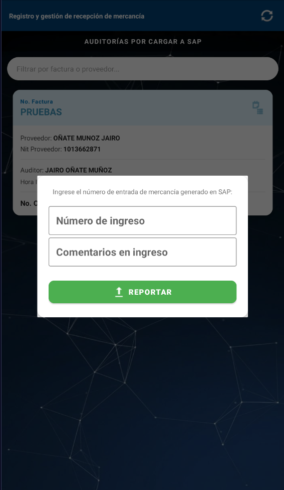
Imagen 8B: Preliminar
Nueva Auditoría
Auditorías Abiertas y Producto
Auditorías por Cargar a SAP
🏢 Módulo 3: Gestión de Almacén e Inventarios Parciales
3.1 Gestor de Almacén, Ubicaciones y Auditoría Histórica
-
Inventario Virtual vs. Físico y Movimientos: Consulta de SKU, fotos, stock y estibas. Permite Actualización de Ubicación (individual) y Reubicaciones Masivas (estibas completas).
🔍 Ver Guía y Detalles
Control de Estibas: Mapeo exacto de posiciones en bodega.
 Imagen 9: Gestor
Imagen 9: Gestor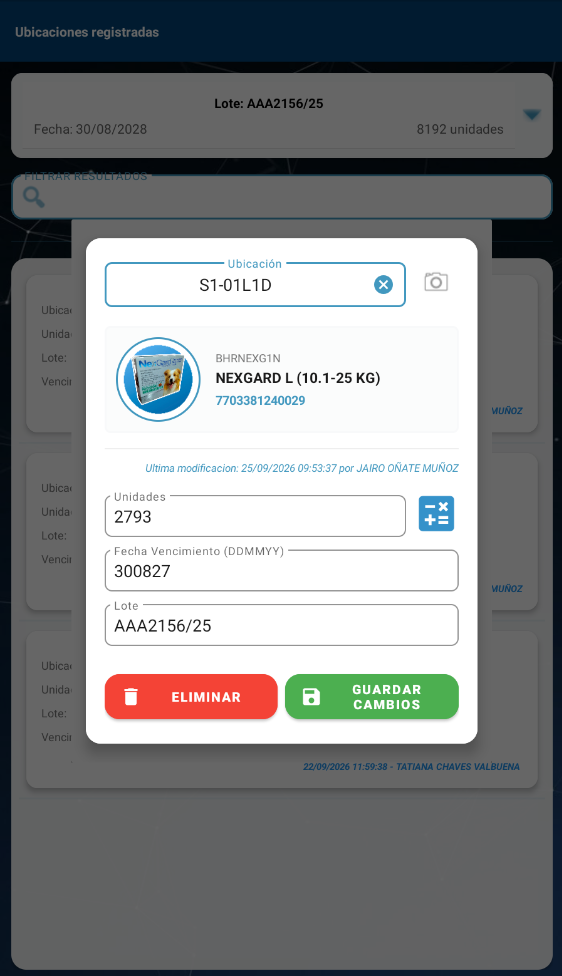
Imagen 9B: Ajuste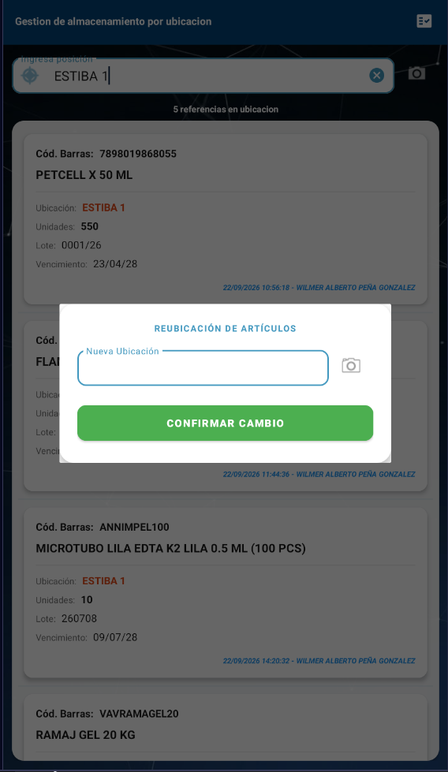
Imagen 9C: Reubicar -
Línea de Tiempo e Historial de Cambios: Auditoría forense inmutable con filtro rápido superior y detalle completo por evento.
🔍 Ver Guía y Detalles
Transparencia Operativa: Esclarece diferencias de inventario por usuario.
 Imagen 10: Historial
Imagen 10: Historial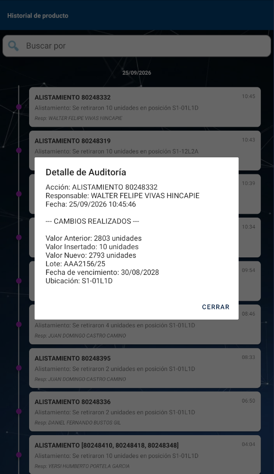
Imagen 10B: Detalle
3.2 Control de Inventarios Parciales por Diferencia
-
Priorización Automatizada de Conteos: Agrupa productos con mayores discrepancias físico vs virtual.
🔍 Ver Guía y Detalles
Eficiencia Cíclica: Ataca primero las diferencias más críticas.
 Imagen 11: Parciales
Imagen 11: Parciales
Gestor y Ubicaciones
Historial de Cambios
Inventarios Parciales
📋 Módulo 4: Operaciones de Stock (Picking, Voz y Novedades)
4.1 Picking Masivo Multi-Factura y Optimización de Rutas
-
Alistamiento Simultáneo (Hasta 7 Documentos): Consolida pedidos en una sola ruta. Incluye vistas ampliadas/detalladas y apoyo auditivo Picking Voice.
🔍 Ver Guía y Detalles
Flexibilidad Operativa: Permite trabajar por lote de facturas o pedido individual.
 Imagen 12: Picking
Imagen 12: Picking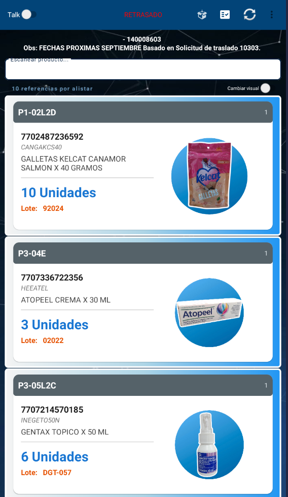
Imagen 12B: Detalle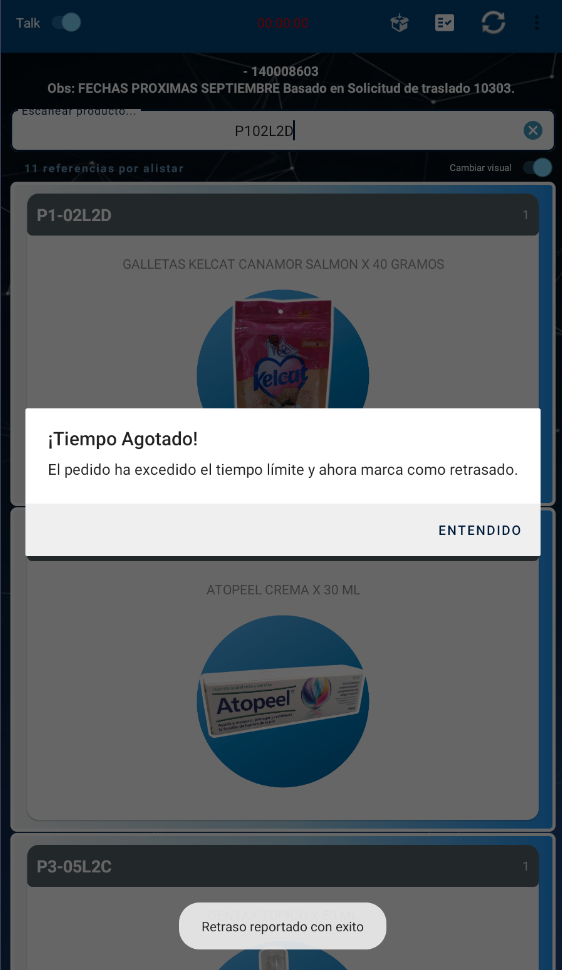
Imagen 12C: Retrasos -
Control de Tiempos y Alertas de Retraso: Cronómetro con cuenta regresiva por pedido.
🔍 Ver Guía y Detalles
Supervisión Activa: Detecta cuellos de botella en tiempo real.
4.2 Validación Estricta de Lotes y Gestión de Novedades
-
Escaneo Inteligente, Menú de Ayuda y Novedades: Muestra lote requerido y filtra solo sus posiciones exactas.
🔍 Ver Guía y Detalles
Menú de Ayuda: Búsqueda Google, Producto en Traslado y Novedades con clave (alerta a Panel Web).
 Imagen 13: Ayuda
Imagen 13: Ayuda Imagen 13B: Lotes
Imagen 13B: Lotes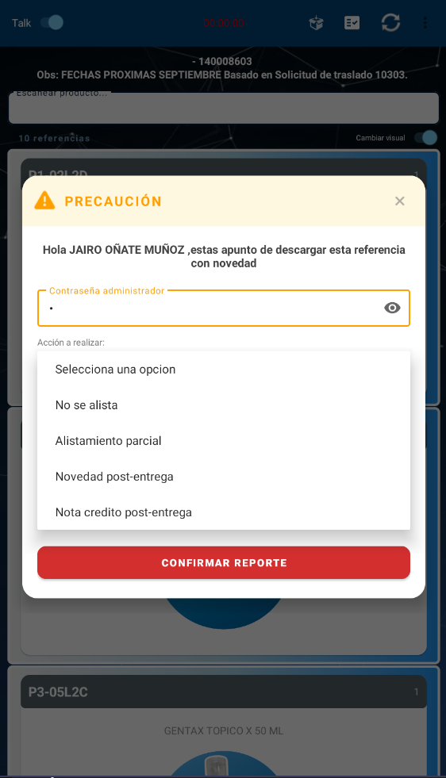
Imagen 13C: Clave
Picking Individual y Vistas
Menú de Ayuda y Lotes

Gestión de Novedades
📦 Módulo 5: Productiva PACKING, Rotulado y Validación Final
5.1 Empaquetado, Mesa de Trabajo y Confirmación
-
Cola de Packing, Mesa de Trabajo y Display Gigante: Asignación obligatoria de mesa (ej. MESA 1) y pop-up en fuente ampliada con lote/unidades para auditoría por cámaras.
🔍 Ver Guía y Detalles
Confirmación: Botón (+) Verde para empaque o (X) Rojo para cancelar.
 Imagen 14: Packing
Imagen 14: Packing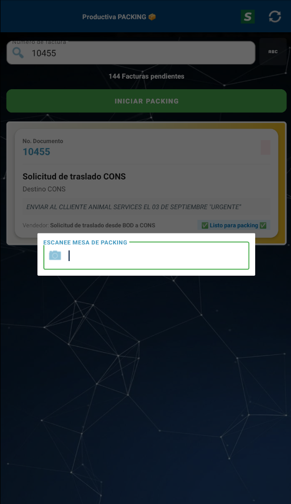
Imagen 14B: Mesa Imagen 14C: Display
Imagen 14C: Display -
Rótulos de Remesa y Checklist Final de Despacho: Envío de rótulos térmicos en red y lista de chequeo obligatoria (Cadena de Frío, Sellos/Firmas y Logística/Piezas).
🔍 Ver Guía y Detalles
Cero Descuadres: Control pre-despacho del vehículo.
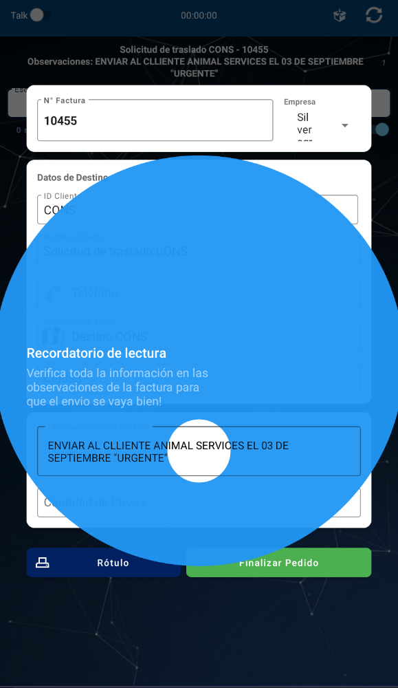
Imagen 15: Remesa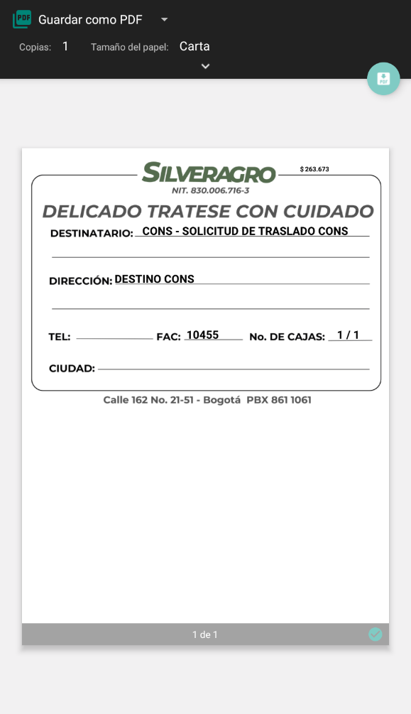
Imagen 15B: Rótulo Imagen 15C: Checklist
Imagen 15C: Checklist
Facturas y Mesa
Lote, Unidades y Empaque
Rótulo y Checklist Final
📊 Módulo 6: Informes de Alistamiento, Trazabilidad y Cadena de Frío
6.1 Consola Global y Auditoría de Tiempos
-
Vista Universal de Facturas y Auditoría Forense: Buscador por factura y menú emergente de acciones (Rótulo, Detalles de tiempos Picking/Packing y Cadena de Frío).
🔍 Ver Guía y Detalles
Trazabilidad Unitaria: Consulta ítem por ítem con reporte de novedades post-entrega.
 Imagen 16: Consola
Imagen 16: Consola Imagen 16B: Tiempos
Imagen 16B: Tiempos -
Calculadora Estándar de Cadena de Frío: Algoritmo que calcula los geles refrigerantes necesarios según el clima del destino y la nevera para productos de 2 °C a 8 °C.
🔍 Ver Guía y Detalles
Protección Térmica: Garantiza estabilidad de medicamentos termolábiles.
 Imagen 17: Cadena Frío
Imagen 17: Cadena Frío
Facturas y Acciones
Tiempos y Productos
Cadena de Frío
🛠️ Anexo Técnico: Matriz de Escalamiento y Glosario Logístico
A. Matriz de Escalamiento de Novedades y Excepciones
| Novedad / Evento | Módulo | Acción en Sistema | Escalar a: |
|---|---|---|---|
| Diferencia ODC / Factura | Recepción (M2) | Guardar como Preliminar | Encargado de compras |
| Fechas Cortas / Calidad | Recepción (M2) | Registro en Formulario Producto | Gerente de operaciones / Líder de almacenamiento |
| Stock Físico Descuadrado | Almacén (M3) | Inventario Parcial por Diferencia | Supervisor de bodega |
| Faltante / Lote Trocado | Picking (M4) | Reportar Novedad por Clave | Supervisor de bodega / Líder de almacenamiento |
| Producto en Tránsito Local | Picking (M4) | Marcar "Producto en Traslado" | Supervisor de bodega |
| Reclamación Post-Entrega | Informes (M6) | Novedad sobre SKU en Factura | Supervisor de bodega / Líder de almacenamiento |
B. Glosario Térmico y Operativo WMS
- WMS (Warehouse Management System): Software especializado en la administración, control y optimización de flujos de inventario.
- Picking: Fase de localización, recolección y extracción de productos en bodega.
- Packing: Fase de verificación, empaquetado, embalaje isotérmico y rotulado final.
- SKU (Stock Keeping Unit): Código único asignado a una referencia comercial.
- Cadena de Frío (Termolábiles): Productos biológicos o medicamentos conservados entre 2 °C y 8 °C.